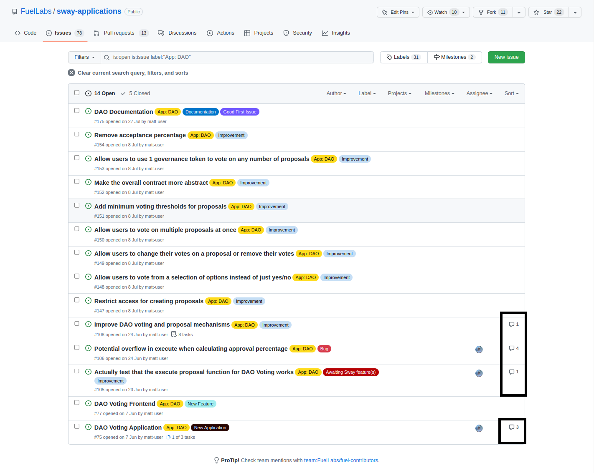

Welcome
Thank you for taking the time to consider contributing to the project!
The aim of this guide is to introduce general concepts that can be taken across many projects in your professional career while directing them specifically at this project.
In this contributing guide, we will cover various topics starting from navigating GitHub issues to submitting a pull request for review.
We advise taking the time to carefully familiarize yourself with the content in each section. Every section has a purpose and it's likely that we will comment on any, if not all, sections in a pull request.
GitHub Issues
GitHub provides a ticketing system called issues which allows users to create and track the progress of tasks that need to be done.
When looking to contribute to a project one of the first places to look is their issues section while following the guidance that the authors of the project have provided in their contributing document.
The issue should describe the work that needs to be done and the contributing document should outline the expectations that must be met in order for the work to eventually make its way into the repository.
Searching for Issues
There are a few points to consider when looking for a task to contribute to. The following sections provide a quickstart guide for navigating the issues in the Sway Applications repository.
Filtering by label
Issues can be grouped into categories through the use of labels and depending on the category a user may choose to contribute to one task or another.
- Is it a bug fix, improvement, documentation etc.
- Is it for the compiler, user interface, tooling etc.
- Is the priority critical and must be resolved immediately or is it a low priority "nice to have"?
Checking for available issues
Once the issues are filtered a task can be selected if another user is not currently assigned to that task otherwise multiple people may be working on the same issue when only one solution can be chosen.
Issue summary
Each issue should have a description which provides context into the problem and what may be done to resolve it.
Filtering by label
The default issues tab shows all of the issues that are currently open. GitHub already provides various search queries that can be made using the search bar. However an easier way is to use the labels that the authors have provided to quickly filter for the relevant issues such as bugs, improvements, documentation, etc.
Under the Label tab you can select any number of labels and any issue that matches those labels will be shown while the other issues will be hidden.

After clicking on the App: DAO label the issues have been filtered to show only the issues that have App: DAO added to them.
Notice that App: DAO is not the only label in the image below. If you wish to further reduce the number of presented issues then additional labels can be added in the same way.

Checking for available issues
It's important to check if anyone else is currently working on a particular issue to avoid performing duplicate work. Not only would this be frustrating but also be an inefficient use of time.
You can check whether someone is assigned to an issue by looking under the Assignee tab. If there is an icon, then someone is tasked with that issue. If there is no icon, then it's likely that no one is currently working on that issue and you're free to assign it to yourself or post a comment so that the author can assign you.

Issue summary
You can see the activity of an issue by looking at the number of comments. This doesn't really tell you much aside from that there is a discussion about what should be done.

Clicking on the issue at the bottom DAO Voting Application we can see some information about the application with some tasks linked to track the overall progress. Scrolling down would present comments in this specific issue which could provide greater insight into the task.

Creating an Issue
If there is work that a project can benefit from then an issue can be filed via a template or a blank form.
We encourage the use of the provided templates because they guide a user into answering questions that we may have. The templates are not mandatory but they provide structure for answering questions like:
- What steps can be taken to reproduce the issue?
- What feature is missing and how would you like it to work?
- Is the improvement an improvement or a personal nitpick?

The questions themselves are not that important, but what is important is providing as much detail about the task as possible. This allows other developers to come to a decision quickly and efficiently regarding the new issue.
Project Quality
The quality of a project can be determined by a variety of measures such as intended utility or adoption. The metric that the following sections will focus on is developer experience.
In the following sections we will take a look at:
- Project Structure
- The file structure and how easily a project may be navigated
- Code Structure
- How to structure the code inside a file
- Documentation
- How to present information about your project
- Testing
- The file structure and tips for testing
If the project is well structured, tested and documented then the developer experience will be good.
Project Structure
In order to navigate through a project easily, there needs to be a structure that compartmentalizes concepts. This means that code is grouped together based on some concept.
The following sections will outline the structures of broadly two kinds of projects:
- Internal project
- Projects that do not need to expose any interface for external use
- External project
- Projects that expose an interface that can be imported into other projects
Internal Project
These are projects that do not provide an externally available interface.
Here is an example structure that we follow for Sway files in the src directory.
src/
├── data_structures.sw
├── errors.sw
├── events.sw
├── interface.sw
├── main.sw
└── utils.sw
In the example above there are no directories, however, it may make sense for a project to categorize concepts differently such as splitting the data_structures.sw into a directory containing individual Sway modules.
data_structures.sw
Contains data structures written for your project.
- structs
- enums
- trait implementations
errors.sw
Contains enums that are used in require(..., MyError::SomeError) statements.
The enums are split into individual errors e.g. DepositError, OwnerError etc.
pub enum MoveError {
OccupiedSquare: (),
OutOfBounds: (),
}
events.sw
Contains structs definitions which are used inside log() statements.
pub struct WinnerEvent {
player: Identity,
}
interface.sw
The Application Binary Interface (ABI) for your contract(s).
This means that the events.sw may not be necessary and that information can be held with the ABI. Similarly, certain data structures may be more suited to be in the interface.
main.sw
The entry point to your contract that contains the implementation of your ABI.
utils.sw
Any private functions (helper functions) that your contracts use inside their functions.
Since a contract cannot call its own ABI functions, we need to abstract away some of the code into private functions so that they can be reused in your contract.
External Project
These are projects that expose an interface, e.g., the ABI of your contract(s), that can be imported into other projects.
The following structure separates the interface of the contract into its own library project so that it can be imported alongside projects in the my_application directory and outside of it.
my_application/
├── my_library/
└── my_contract/
The interface has a simple structure in this example because it consists of a single file, lib.sw.
my_library/
├── src/
├──── lib.sw
├── tests/
├── Cargo.toml
└── Forc.toml
The contract follows the structure of an internal project however since the interface is now its own project interface.sw has been removed from the src directory and it is being imported in the manifest file.
my_contract/
├── src/
├──── data_structures.sw
├──── errors.sw
├──── events.sw
├──── main.sw
├──── utils.sw
├── tests/
├── Cargo.toml
└── Forc.toml
Code Structure
Structuring code in a way that is easy to navigate allows for a greater developer experience. In order to achieve this, there are some guidelines to consider.
- Fields in all structures should be alphabetical
- Functions should be declared by the weight of their purity e.g.
read & writefirstreadsecondpurelast
- Structures should be grouped into modules and the content inside should be alphabetically ordered
- Dependencies and imports should be alphabetical
- Document the parameters of the interface in alphabetical order and preferably declare them in the same order in the function signature
An important aspect to remember is to use the formatter(s) to format the code prior to a commit.
cargo fmtto formatRustfilesforc fmtto formatSwayfiles
Documentation
Documentation is arguably the most important aspect of any open source project because it educates others about how the project works, how to use it, how to contribute etc.
Good documentation enables frictionless interaction with the project which in turn may lead to a greater userbase, including contributors, which causes a positive feedback loop.
In the following sections we will take a look at how to document the:
- Read me
- The first document a user will see which includes content such as installation instructions
- Code
- Documenting the code itself such that contributors know how to interact with it
- Specification
- Presenting technical (or non-technical) information about your project
Read me
The README.md is likely to be the first file that a user sees therefore from the perspective of a user there are certain expectations that need to be met.
Introduction
A user needs to know what the project is and what it does. The content in this section should be a brief overview of what the project can do and it should not touch on any technical aspects such as the implementation details.
Once a user has an idea of what they are getting into they can move onto the next section.
Quickstart
The quickstart should inform the user where the project is supported (e.g. the operating system), and has been tested to work, before moving onto the installation and removal instructions.
A user should be able to easily install, use, and potentially remove your project to create a good experience.
Miscellaneous
This "section" can be a number of sections which the authors of the project think the user may be interested in.
Some information may include:
- Links to documents such as contributing guides, blogs, socials etc.
- Ways to support the project
- Known issues
There is a variety of content that may be added, however, it's important to note that this is the first document a user will see and thus should not be overloaded with information. If the user can learn a little about the project, use it, and find links to additional content then the document has achieved its purpose.
Code
Documenting code is an important skill to have because it conveys information to developers about the intention and usage of the project.
In the following sections we'll take a look at three ways of documenting code and a code style guide.
For general documentation refer to how Rust documents code.
ABI Documentation
ABI documentation refers to documenting the interface that another developer may be interested in using.
The form of documentation we focus on uses the /// syntax as we are interested in documenting the ABI functions.
In the following snippet, we provide a short description about the functions, the arguments they take, and when the calls will revert. Additional data may be added such as the structure of the return type, how to call the function, etc.
library;
use ::data_structures::{Game, Player};
abi ConnectFour {
/// Creates a new game
///
/// Creating a game allows players to sequentially take turns placing their marker in an empty
/// spot until a player reaches four in a row or the board is filled and a draw is declared
///
/// # Arguments
///
/// - `player_one` - The first player to make a move
/// - `player_two` - The second player to make a move
///
/// # Reverts
///
/// - When a player has been blacklisted for cheating
fn create_game(player_one: Player, player_two: Player) -> Game;
/// Places a marker from the next player in the game in the specified column
///
/// # Arguments
///
/// - `column` - The column to place a marker in, range 0 <= column < 8
/// - `game` - The game to make a move in
///
/// # Reverts
///
/// - When a game has ended in a player winning or a draw
/// - When a marker is placed into a `column` that is full
fn move(column: u64, game: Game) -> Game;
}
In order to know what should be documented, the author of the code should put themselves in the position of a developer that knows nothing about the function and think about what sort of questions they may have.
Comments
Comments are used by developers for themselves or other developers to provide insight into some functionality.
There are many ways to achieve the same outcome for a line of code however there are implementation tradeoffs to consider and a developer might be interested in knowing why the current approach has been chosen.
Moreover, it may not be immediately clear why, or what, some line of code is doing so it may be a good idea to add a comment summarizing the intent behind the implementation.
The following snippet looks at two items being documented using the comment syntax //.
Item1has poor comments that do not convey any meaningful information and it's better to not include them at all.Item2has taken the approach of describing the context in order to provide meaning behind each field
// This is bad. It's repeating the names of the fields which can be easily read
pub struct Item1 {
/// Identifier
id: u64,
/// Quantity
quantity: u64,
}
// This is better. It conveys the context of what the fields are
pub struct Item2 {
/// Unique identifier used to retrieve the item from a vector of items held in storage
id: u64,
/// The number of remaining items left in production
quantity: u64,
}
Naming Components
Documenting the interface and adding comments is important however the holy grail is writing code that is self-documenting.
Self-documenting code refers to code that is written in such a way that a regular user who has never seen a line of code before could interpret what it is doing.
One of the most difficult aspects of programming is coming up with meaningful names that describe the content without being overly verbose while also not being too concise.
Naming components is both a skill and an art and there are many aspects to consider such as the context in which that variable may exist. In one context an abbreviated variable may be meaningful because of how fundamental that concept is while in another context it may be regarded as random characters.
Here are some points to consider when coming up with a name for a component.
Abbreviations
Abbreviating names is a bad practice because it relies on contextual knowledge of the subject. It forces the developer to step away from their task in order to find the definition of some abbreviation or perhaps wait on a response from another developer.
On the other hand, common abbreviations may be meaningful for a given context and it may be detrimental to come up with a different, or long form, name to describe the content.
In general, a developer should take a moment to consider if an abbreviation provides more benefit than cost and how other developers may interpret that name in the given context.
That being said, here are some examples that should be avoided.
Single Character Names
Using a single character to name a variable conveys little to no information to a developer.
- Is this a throw away variable?
- What is the variable meant to represent wherever it is used?
- Does it make sense to call it by the chosen character e.g.
xwhen referring to formulas?
Ambiguous Abbreviations
A common mistake is to abbreviate a variable when it does not need to be abbreviated or when the abbreviation may be ambiguous.
For example, in the context of an industry that deals with temperature sensors what does the variable temp refer to?
temperaturetemporarytempo
Perhaps in the specific function it makes sense to use the abbreviation. Nevertheless, it's better to add a few more characters to finish the variable name.
Declarative statements
When choosing a name, the name should be a statement from the developer and not a question. Statements provide a simple true or false dynamic while a variable that may be read as a question provides doubt to the intended functionality.
For example:
can_change->authorized- The "can" can be read as a question or a statement.
- Is the developer asking the reader whether something can change or are they asserting that something either is or is not authorized to change?
is_on->enabled- "is" can also be read as a question posed to the reader rather than a simple declaration.
Style Guide
Programming languages have different ways of styling code i.e. how variables, functions, structures etc. are written. These are not syntactical rules, but rather a set of conventions and best practices to encourage standardization and improve readability. Sway has a style guide which can be found in the Sway Reference
Specification
A specification is a document which outlines the requirements and design of the project. There are many ways to structure a specification and this number only grows when considering the industry and target audience.
For simplicity, a specification can be broken into two levels of detail and the one you choose depends on your target audience.
Non-technical specification
A non-technical specification is aimed at an audience that may not have the expertise in an area to appreciate the technical challenges involved in achieving the goals and thus it can be seen as an overview or summary.
As an example, this may be a developer explaining how a user would interact with the user interface in order to send a coin / asset to someone, without revealing the functionality behind signing a transaction and why a transaction may take some amount of time to be confirmed.
This type of specification is simple so that any layperson can follow the basic concepts of the workflow.
Technical specification
A technical specification is aimed at users that may be regarded as experts / knowledgeable in the area. This type of specification typically assumes the reader understands the basic concepts and dives into the technical aspects of how something works, step-by-step.
Note: Diagrams are a fantastic visual aid no matter the level of detail
Testing
The Sway Applications repository generally follows the current file structure when testing using the Rust SDK.
tests/
├── functions/
| └── 1 file per ABI function
├── utils/
| ├── interface.rs
| ├── setup.rs
| └── mod.rs
└── harness.rs
functions
The functions directory contains 1 file per function declared in the abi and all test cases (not utility/helper functions) for that function are contained within that module.
There are two possibilities with any function call and they are that either the call succeeds or it reverts. For this reason each file contains two modules:
successrevert
All of the tests where the function does not revert should be contained inside the success module while the reverting calls (panics) should be contained inside the revert module.
There are two additional alternatives to consider:
- The
abimay be split into multipleabiblocks- In this case each
abimay be its own directory containing its functions - This changes the structure from having all functions in 1 directory to having categorized functions in their relevant directories
- In this case each
- In some cases it may be reasonable to further separate the function into its own directory which contains two files
successrevert
utils
The utils directory contains utility functions and abstractions which allow the tests in the functions directory to remain small, clean and "DRY" (do not repeat yourself).
This can be achieved by separating content into files, internally creating modules in mod.rs or a mixture of both.
The interface.rs file contains abi wrappers which are functions that are generally limited to calling the contract with the relevant arguments. In the case where there are multiple abi blocks (as mentioned in functions) the interface.rs file would be changed to follow a similar structure.
The setup.rs file contains code that generates the contracts/scripts/predicates and sets up the environment for the tests in the functions directory.
harness.rs
The harness file is the entry point for the tests, and thus it contains the functions and utils modules. This is what is executed when cargo test is run.
Pull Requests
A pull request is a term used to identify when a piece of work is ready to be pulled into and merged with another piece of work. This functionality is especially useful when collaborating with others because it allows a review process to take place.
In order to create a high quality pull request there are a couple areas that need to be considered:
- Committing your work
- How to incrementally save your work
- Creating a pull request
- How to request a review
Committing your work
A commit can be thought of as a snapshot in time which captures the difference between the snapshot that is currently being made and the previous snapshot.
When creating a snapshot there are some points to consider in order to keep a high quality log:
- The quantity of work between commits
- Grouping work by task / concept
- The message used to track the changes between commits
Quantity of Work
The amount of work done per commit is dependent upon the task that is being solved however there is a general rule to follow and that is to avoid the extremes of committing everything at once or committing every minor change such as a typo.
The reason for not committing all of the work at once is twofold:
- When a fault occurs which leads to a loss of work then all of that work is lost
- If a section of work needs to be reverted then everything must be reverted
Similarly, small commits should be avoided because:
- A lot of commits may be considered as spam and may be difficult to parse
Categorization
Categorizing commits into issues being resolved allows us to easily scope the amount of work per commit. With appropriate categories the likelihood of too much, or not enough, work being committed is reduced.
An example could be a failing test suite which includes multiple functions that were re-written. In this instance it may be a good idea to fix a test, or a test suite, for one specific function and committing that work before moving onto the next.
This creates a clear separation within the task of fixing the test suites by fixing one suite in one commit and another in another commit.
Commit Messages
Once the issue has been resolved it's time to write a message that will distinguish this commit from any other.
The commit message should be a concise and accurate summary of the work done:
Good commit message:- Fixed precondition in
withdraw()which allowed draining to occur
- Fixed precondition in
Bad commit message:- Fix
- Fixed function
- Fixed an assertion where a user is able to repeatedly call the
withdraw()functions under an edge case which may lead to the contract being drained
More information about commit messages may be found in:
- The README from joelparkerhenderson
- The Medium article by Apurva Jain
Creating a pull request
There are two types of pull requests and depending on which one is chosen it will convey a different intent to the authors.
A regular pull request is for when the author of the pull request is satisfied with the work done and believes that the author(s) of the project should perform a review in preparation of merging the work into some branch.
A draft pull request indicates that work is currently in progress and not ready for review.
When to create a pull request
There are two approaches that can be taken:
- A pull request can be made when the task is deemed to be completed
- A
draftpull request can be created after the first commit in order to allow for easy tracking of the progress
Which one should be chosen may come down to preference or the contributing guide of a project. That being said, the benefit of creating and working on a draft is that it makes it easier to spot the request and thus early comments may be left which provide additional support.
How to structure a pull request
Depending on the account permissions and where the pull request is being made, there may be some features that are unavailable. For example, an external contributor may not be able to set a label to categorize the request.
There are at least five sections to consider when creating a pull request:
The Title
It's important to provide a title that accurately identifies the work that is being done. This is easy if there is an issue, even more so if the issue is described well, as the title can be directly copy and pasted from the issue. This allows for a one-to-one mapping of an issue to pull request which makes it easy to spot when an issue is ready to be merged.
The Description
The information in the pull request should be structured neatly through the use of headings, bullet points, screenshots etc. because this makes it easier to immediately see the changes rather than having to parse through one large paragraph.
Some ideas for sections are:
- The changes that have been made and the motivation behind them
- Limitations
- Assumptions
- Future work if the pull request is part of an epic (set of tasks / issues)
The Reviewers
If the project is managed well then a contributor does not have to think about who should review their work because it will be automatically filled in for them. This is done through the use of a code owners file.
If that is not the case then the contributor will need to figure out the correct author(s) for code review and select them (if permissions allow it) or the request will be without any reviews until an author spots the request and assigns someone.
The Labels
If there is an issue which is well managed then the labels for that issue can be set on the pull request (if permissions allow it) otherwise an author may need to set the labels if they choose to.
The Issues
If there is an issue that the pull request is working off of then it's a good practice to reference that issue so that it gets closed automatically when the pull request is merged. This can be done via the user interface or by reference in the description using a closing keyword.
For example, issue number 123 would be referenced in the description as closes #123.
Additionally, referencing the issue that the pull request is based on allows the reviewer to easily click on the link which will take them to the issue. This makes it easy to see the problem in detail and any discussion that occurred.
Merging the Pull Request
Once the request has received enough approvals from the authors then either the authors or the contributor may merge the work in. When attempting to merge there may be an option to squash the commits. It's a good idea to delete the previous commits in the optional description so that a single message summarizes the entire work that has been done. This makes it easier to parse the commit history.